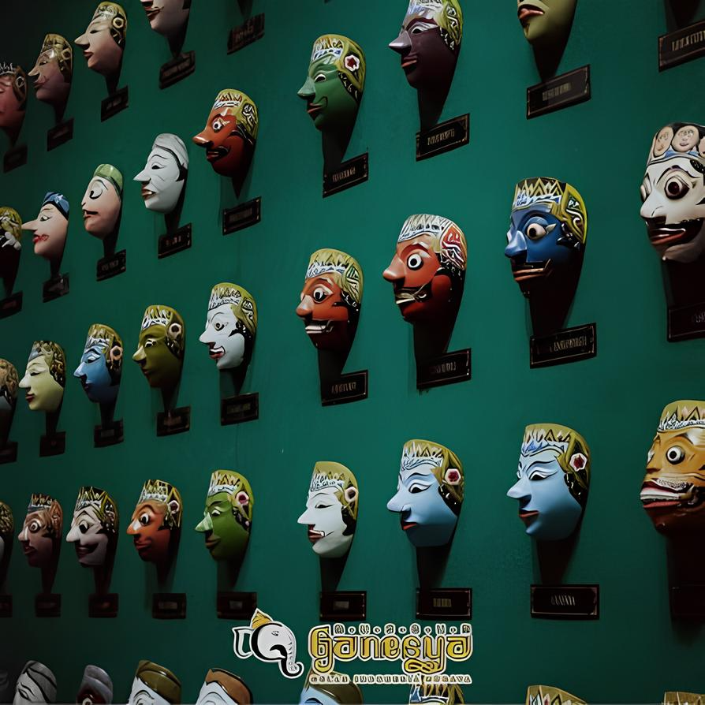
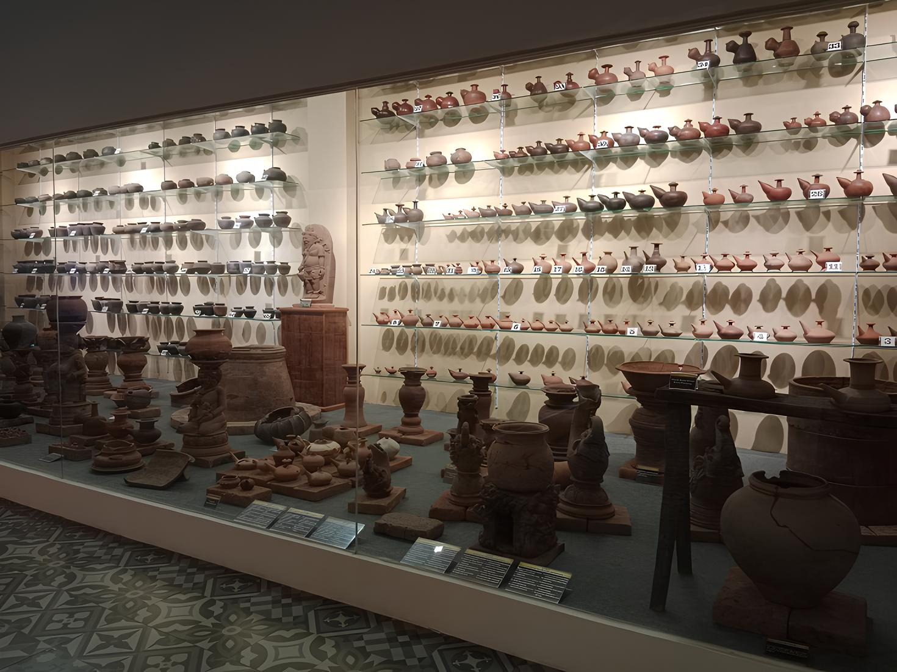
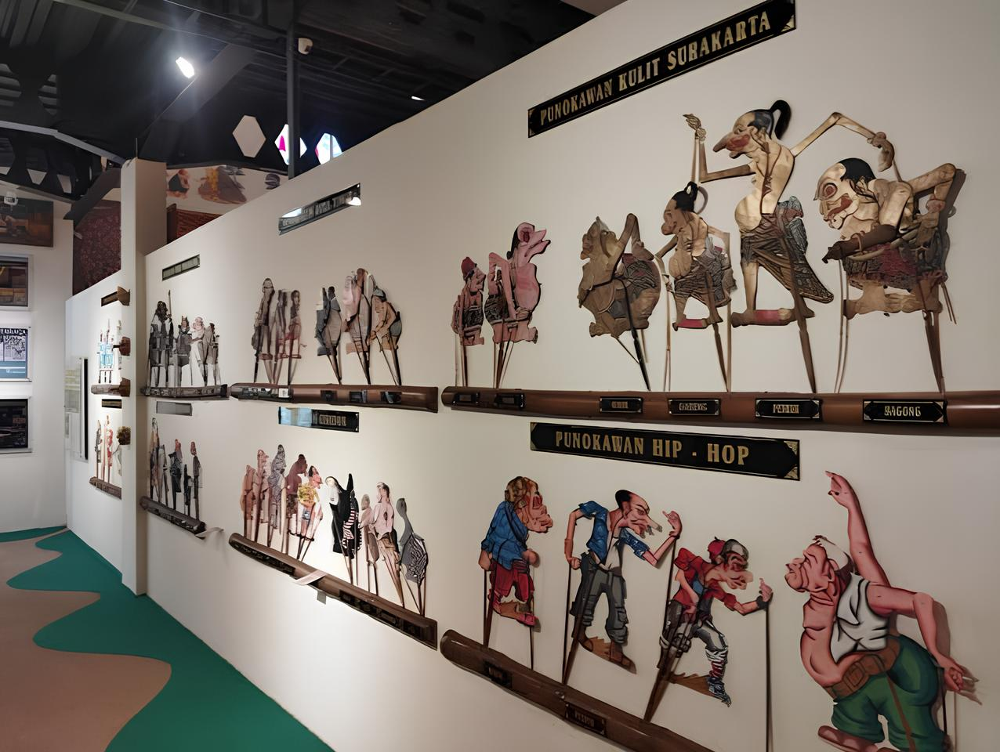
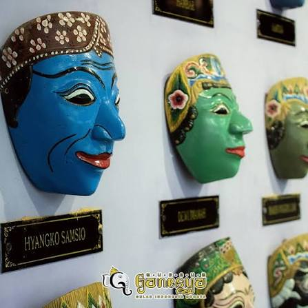
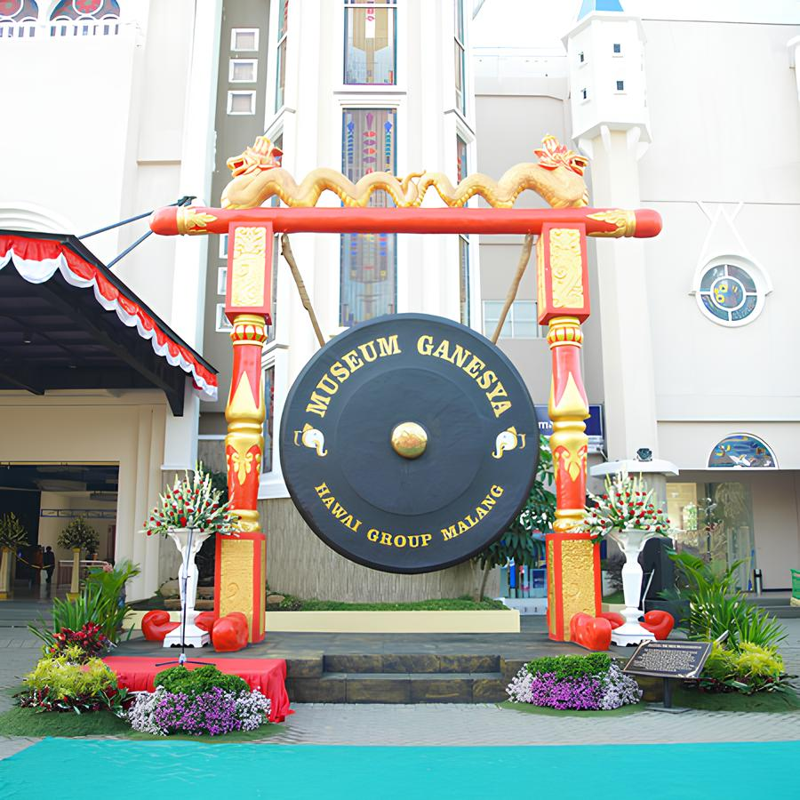

Jelajahi jejak sejarah, kekayaan budaya, dan warisan Nusantara melalui koleksi Museum Ganesya.
Lihat Koleksi →Menjadi museum yang berperan dalam menjaga, melestarikan, dan memperkenalkan kekayaan budaya Indonesia kepada masyarakat melalui koleksi dan informasi yang mudah diakses.
Jelajahi berbagai koleksi budaya dan sejarah yang terdapat di Museum Ganesya.

Koleksi benda bersejarah dan peninggalan masa lalu yang memiliki nilai budaya dan sejarah.
Selengkapnya →
Koleksi wayang sebagai salah satu warisan budaya Indonesia yang memiliki nilai seni dan cerita sejarah.
Selengkapnya →
Koleksi topeng tradisional yang menggambarkan keberagaman seni dan budaya Nusantara.
Selengkapnya →
Museum Ganesya atau Museum Budaya Indonesia merupakan museum yang menyimpan berbagai koleksi yang berkaitan dengan sejarah dan budaya Nusantara.
Museum ini diresmikan pada 12 Juli 2019 dan menjadi salah satu tempat edukasi bagi masyarakat untuk mengenal kekayaan budaya Indonesia.